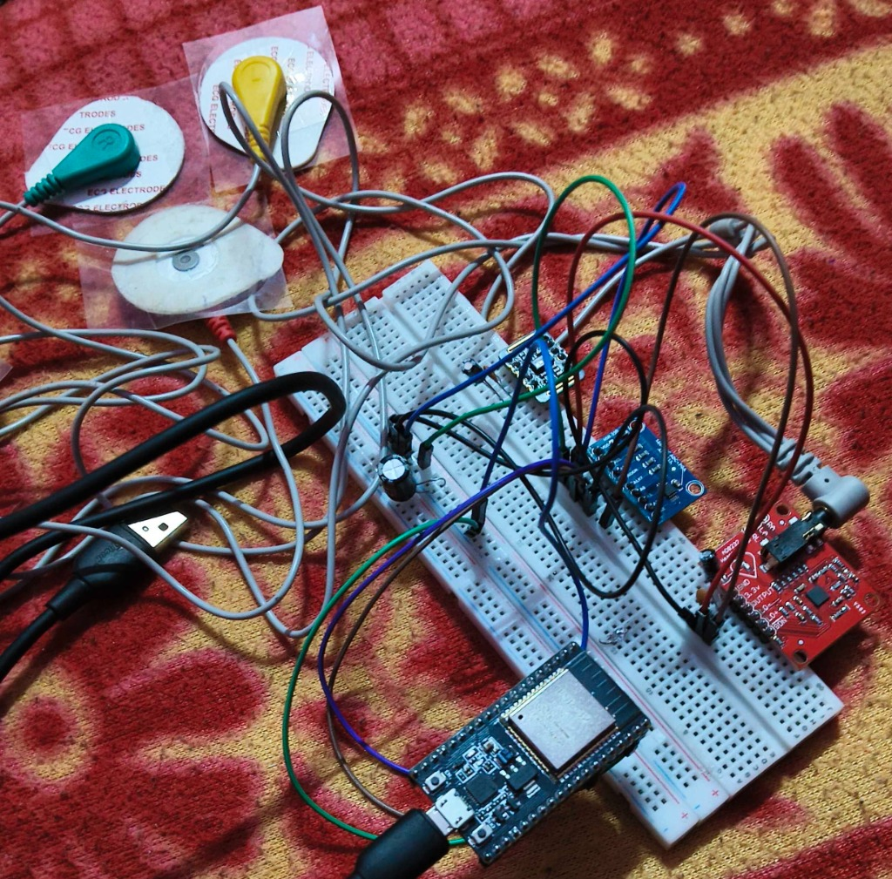
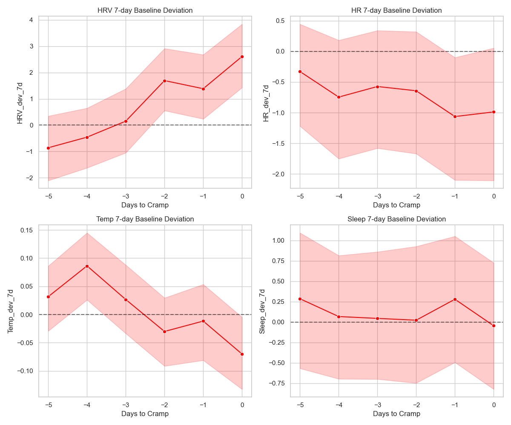

Cognitive & Heart Studies
Question-Level Cardiac Dynamics During Working Memory
OpenNeuro ds006848 · 30 People · 5,959 Memory Trials · 1000 Hz ECG
- Analyzed continuous heart data across 30 people answering 6,000 memory questions.
- Found that heart rate drops by ~2 BPM while focusing; people whose heart failed to slow made 8.3% more errors when rushed.
- Conducted rigorous data checks to confirm the heart slowing effect is real.
1000 Hz Continuous ECG
Heart Slowing (-1.93 BPM)
Speed Pressure Vulnerability
Signal Processing DSP
Linear Mixed Models
Rigorous Baseline Controls
−1.93 BPM Focus Dip
Heart naturally slows down while holding information in mind
p = 0.0084 Speed Deficit
8.3% accuracy crash under rush when heart fails to slow down
ML / Physiological Research
DREAMER — Subject-Held-Out Physiological Emotion Recognition
23 People · 252 Trials · Auditing Emotion AI Claims
- Tested claims that AI can read emotions from smartwatch sensors using a movie-watching benchmark dataset.
- Showed that on new people, model accuracy drops to a coin flip (~55%), disproving claims of general emotion reading.
- Revealed that the AI was just memorizing which movie clip played rather than reading true feelings.
Brain EEG (14-channel)
Heart ECG
DREAMER Dataset
Emotion AI Audit
Fair Generalization Test
Data Leakage Checks


Hardware Acquisition
DIY Dual-Modality ECG & PPG Hardware Acquisition Rig
Benchtop Analog Front-End & Synchronous Dual-Trace Oscilloscope
- Built a benchtop sensor rig capturing electrical heart signals (ECG) and optical pulse waves (PPG) at the same time.
- Cleaned electrical noise with analog filters and streamed live waveforms to a custom PC oscilloscope screen.
- Measured pulse transit time (how long blood takes to travel from the heart to the fingertip).
AD8232 AFE
MAX30102 Optical
ESP32 FreeRTOS
Python Telemetry
Analog Filtering
Pulse Transit Time (PTT)


Physiological Data & Validation
Lunar — Menstrual Cycle Physiological Data Analysis & Validation
42 People · Longitudinal Physiological Modeling · mcPHASES
- Audited continuous smartwatch health data from 42 women across natural monthly cycles.
- Quantified cycle phase variation, establishing a realistic effect size of Cohen's d = 0.27.
- Confirmed a genuine dip in nighttime heart variability 24–36 hours before painful cramps start.
PhysioNet mcPHASES
N=42 Cohort
Longitudinal HR/HRV
Data Quality Audit
Feature Baselines
Cohen's d = 0.27


Flagship Hardware & ML
Novara — Wearable Physiological Monitoring for Hypertension & Preeclampsia
Hospital Benchmark Evaluation: 99.0% Sensitivity, 99.9% +P
- Built a wearable device to catch early signs of high blood pressure using heart (ECG) and pulse (PPG) sensors.
- Runs on ESP32 with firmware detecting heartbeats in <15ms with 99.0% hospital benchmark accuracy.
- Combines heart metrics with personal temperature and sleep baselines to prevent false alarms.
ESP32
AD8232 ECG
MAX30102 PPG
ADS1115 (16-bit)
Pan-Tompkins DSP
Flutter Dashboard
MIT-BIH AAMI Validation


Hardware Design & KiCad EDA
Custom BLE Wearable Health Sensor Node — PCB Design (KiCad)
Custom 4-layer rigid-flex design: Main Board, Sensor Board & Flex Wire Interconnect
- Designed a 4-layer wearable board in KiCad combining Bluetooth, pulse, motion, and precision temperature sensors.
- Built with USB-C battery charging, ultra-low-noise power rails, and tuned antenna matching for long battery life.
KiCad EDA
nRF52833 BLE SoC
MAX30101 PPG
TMP117 Precision Temp
BMA400 Ultra-Low-Power IMU
USB-C LiPo Charging
Split RF/Analog LDO Rails
Antenna Matching & ESD
KiCad 3D Hardware CAD Inspection
Custom BLE Health Sensor Node KiCad CAD: 3D CAD dynamic inspection of the hardware layout showing multi-layer trace escape routing, component placement, and modular interconnect assembly.
Modular Hardware Architecture
KiCad 3D Physical Models
 01 · Main Processing Board
01 · Main Processing Board
Main Processing Board
Central computing hub housing MCU, power regulation, tact switch, USB communication & digital bus routing.
 02 · Sensor Board
02 · Sensor Board
Sensor Satellite Board
Ultra-compact physiological sensing front-end with analog filtering passives and dedicated ground plane isolation.
 03 · Flex Wire Interconnect
03 · Flex Wire Interconnect
Flex Wire (FPC Ribbon Cable)
Custom flexible PCB bridge connecting Main Board to Sensor Board, enabling ergonomic body contour flexibility and low-strain skin placement.
Assistive Robotics & Biosignals
Eye-Controlled Car for Assistive Mobility
GitHubHands-Free Vehicle Control via Eye Movements & Blinks
- Built a 4-wheel robot car controlled hands-free using eye movements and blinks for people with mobility impairments.
- Intentional eye blinks toggle Start / Stop, while looking left or right steers the car.
- Streams live eye signals to an Arduino over serial, filtering out facial muscle noise to avoid accidental moves.
Eye Tracking (EOG)
Blink Detection
Arduino Uno
Motor Driver Robotics
Python Telemetry
Assistive Technology